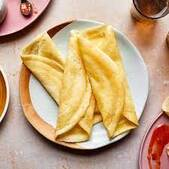
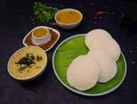
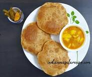
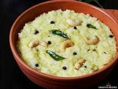
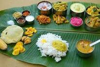
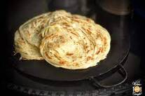
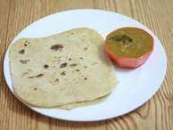
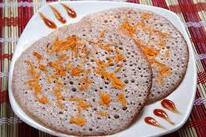
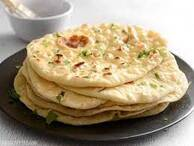

Dosa
A dosa / dosai / dosey is a thin batter-based dish originating from South India, made from a fermented batter predominantly consisting of lentils and rice. Its main ingredients are rice and black gram, ground together in a fine, smooth batter with a dash of salt, then fermented
Idly
Idli or idly is a type of savoury rice cake, originating from the Indian subcontinent, popular as breakfast foods in Eastern and Southern India and in Sri Lanka. The cakes are made by steaming a batter consisting of fermented black lentils and rice
Poori
Puri is a deep-fried bread made from unleavened whole-wheat flour that originated in the Indian subcontinent. It is eaten for breakfast or as a snack or light meal. It is usually served with a savory curry or bhaji, as in puri bhaji, but may also be eaten with sweet dishes
Pongal
Pongal, also known as pongali or huggi, is an Indian rice dish. In Tamil, "pongal" means "boil" or "bubbling up". The two varieties of pongal are chakarai pongal, which is sweet, and venn pongal, which is savoury and made with clarified butter
Meals
A "meal" is any single food or collection of foods that you eat and consider it to be a specific event (breakfast, brunch, lunch, afternoon tea, tea, dinner, supper etc). A "dish" is usually made up of several different foods (cooked or not) and might be just one part of a bigger meal.
Sambar rice

Sambar rice is a dish made with lentils, rice, mixed vegetables, spices & herbs. It is a delicious, flavorful & protein packed dish that is also healthy & nutrient dense
Lemon rice

Lemon Rice also known as Chitranna or Nimmakaya Pulihora is a crunchy, flavorful, tasty and tangy dish that is easy to make and tastes so good. Lemon juice, fried nuts, aromatic herbs and spices combine perfectly to give this steamed rice an amazing spicy, tangy and nutty flavor.
Curd rice

Curd rice, also called yogurt rice, is a dish originating from India. The word "curd" in Indian English refers to unsweetened probiotic yogurt. It is most popular in the South Indian states of Tamil Nadu, Kerala, Karnataka, Telangana and Andhra Pradesh; and also in Maharashtra
Parotta
Parotta or Porotta is a Subcontinental layered flatbread made from Maida or Atta, alternatively known as flaky ribbon pancake. It is very common in Kerala, Tamil Nadu and widely available in other states like Karnataka, Maharashtra and countries like Malaysia, United Arab Emirates and Sri Lanka.
Chappati
Chapati, also known as roti, rotli, safati, shabaati, phulka, chapo, and roshi, is an unleavened flatbread originating from the Indian subcontinent and staple in India, Nepal, Bangladesh, Pakistan, Sri Lanka, East Africa, Arabian Peninsula and the Caribbean.
Uthapam
An uttapam (or uthapam, uttappam, etc.) is a type of dosa from South India. Unlike a typical dosa, which is crisp and crepe-like, an uttapam is thicker, with toppings. The name is derived from the Tamil words appam and utthia or uttria, meaning "poured appam", because appam is cooked in a round-bottom pan, whereas utthia-appam is cooked on a flat skillet
Naan
Naan is a leavened, oven-baked or tawa-fried flatbread which is found in the cuisines mainly of Western Asia, Central Asia, Indian subcontinent, Indonesia, Malaysia, Myanmar, and the Caribbean.